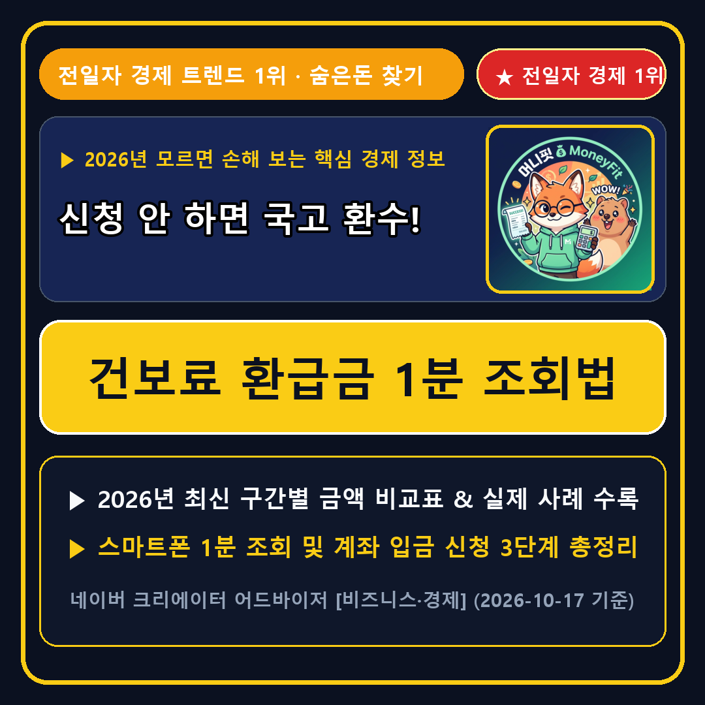

청년미래적금, 케이뱅크 돈나무, 금시세 (자가학습 가중치 1.563 / +25% 강화)2_homefeed_thumbnails/2026-10-18_slot1_ca-econ-health-insurance-refund_thumb.png (스마트에디터 최상단 대표사진 지정 필수)3_clip_webtoon_crank_safe/2026-10-18_clip1_ca-econ-health-insurance-refund.mp4truthofmarket.com 연동 / 이웃 1만 명 배너💬 "어제 조회해보고 깜짝 놀란 48만원! 모르고 그냥 냈다가 소멸될 뻔했습니다"

▲ 신청 안 하면 국고 환수! 건보료 환급금 1분 조회법 핵심 요약
어제 저녁에 부모님과 통화하다가 혹시나 해서 국민건강보험공단 앱에 들어가 '미지급 환급금 조회'를 눌러봤는데, 세상에 찾아가지 않은 본인부담상한제 환급금이 48만 원이나 잠자고 있는 걸 발견했습니다.
요즘 네이버 크리에이터 어드바이저 경제 검색어 상위에 오른 '청년미래적금', '케이뱅크 돈나무', '금시세'처럼 하루 몇백 원씩 아끼고 모으는 재테크에는 관심이 많으면서도, 정작 이 제도를 몰라서 수십만 원에서 백만 원이 넘는 환급금을 그냥 묵혀두고 계신 분들이 정말 많더라고요.
특히 환급 발생일로부터 3년 안에 신청하지 않으면 소멸시효가 지나 아예 찾아갈 수 없게 됩니다. 오늘 글에서는 어제 네이버 경제·생활 카테고리에서 검색량이 폭발한 '건강보험료 환급금 & 본인부담상한제 지급 신청 방법'과 환급금을 종잣돈으로 굴리는 법을 가장 알기 쉽게 정리해 드립니다.
건강보험공단에서 국민들에게 돌려주는 환급금은 크게 두 가지입니다.
첫째는 '본인부담상한제 사후환급금'입니다. 1년 동안(1월 1일~12월 31일) 병·의원이나 약국에서 지출한 건강보험 적용 본인부담금 총액이 내 소득분위별 상한액(1분위 약 87만 원 ~ 10분위 약 808만 원)을 초과했을 때, 그 초과분을 공단에서 전액 현금으로 돌려주는 제도입니다.
둘째는 '보험료 과오납 환급금'입니다. 퇴사나 이직, 사업장 변경, 혹은 지역가입자에서 직장가입자 피부양자로 자격이 변동되는 과정에서 보험료가 이중으로 빠져나갔거나 잘못 산정된 차액을 돌려주는 돈입니다.
아래 표는 소득분위(1분위~10분위)에 따라 1년 치 건강보험 본인부담 병원비가 얼마를 넘었을 때 현금 환급이 나오는지, 그리고 돌려받은 돈을 청년미래적금·케이뱅크 돈나무·금시세 재테크에 어떻게 연결하면 좋은지 정리한 핵심 기준표입니다.
| 소득 분위 구간 | 월 건강보험료 기준(직장인 약식) | 연간 본인부담 상한액 | 초과 시 환급 예시 (연 병원비 250만원 지출 시) | 추천 재테크 연결 |
|---|---|---|---|---|
| 1분위 (하위 10%) | 월 5만 원 이하 구간 | 약 87만 원 | 약 163만 원 현금 환급 | 청년미래적금 / 특판 예치 |
| 2~3분위 | 월 5만 ~ 8.5만 원 구간 | 약 108만 ~ 138만 원 | 약 112만 ~ 142만 원 현금 환급 | 청년미래적금 월 납입금 활용 |
| 4~5분위 (중위권) | 월 8.5만 ~ 14만 원 구간 | 약 196만 원 | 약 54만 원 현금 환급 | 케이뱅크 돈나무 파킹통장 |
| 6~7분위 | 월 14만 ~ 23만 원 구간 | 약 325만 원 | 325만 원 초과분 전액 환급 | KRX 금시세 소액 적립 |
최근 환급금을 조회해 준다며 수수료를 요구하는 사설 대행 광고가 많지만, 정부·공단 공식 채널을 이용하면 단 1원의 수수료도 없이 1분 만에 내 통장으로 전액 입금받을 수 있습니다.
STEP 1. 스마트폰에서 'The건강보험' 모바일 앱을 실행하거나 PC에서 '국민건강보험공단 홈페이지(또는 정부24 미환급금 찾기)'에 접속해 간편인증(카카오·네이버·토스 인증서)으로 로그인합니다.
STEP 2. 전체 메뉴에서 [민원여기요 ➔ 조회 ➔ 환급금(지원금) 조회/신청] 메뉴를 터치합니다.
STEP 3. 조회된 미지급 환급금 내역이 있다면 본인 명의의 은행 계좌번호를 입력하고 [지급 신청] 버튼을 누르면 영업일 기준 2~5일 이내에 내 통장으로 현금이 바로 입금됩니다.
Q1. 지급 신청 안내문을 못 받았는데도 조회해 볼 필요가 있나요?
네, 주소지 이전으로 우편 안내문을 못 받았거나 문자 스미싱으로 오해해 삭제한 경우가 매우 많습니다. 지금 바로 앱에서 직접 조회해 보시는 것이 가장 정확합니다.
Q2. 부모님 환급금은 어떻게 확인해 드릴 수 있나요?
수술이나 입원, 약국 지출이 잦은 60~80대 부모님 계정에 미수령 환급금이 쌓여 있는 비율이 가장 높습니다. 이번 주말에 부모님 스마트폰으로 'The건강보험' 앱에서 꼭 한 번 조회해 드리세요.
💬 오늘 정리해 드린 『건보료 환급금 1분 조회법』, 지금 바로 1분만 투자해 확인해 보세요!
• [3초 무료 환급·절세 시뮬레이터]: 내 소득분위별 건강보험료 본인부담상한제 예상 환급액 3초 계산기 (truthofmarket.com)에서 내 조건별 예상 금액을 바로 계산해 보실 수 있습니다.
• [네이버 클립 & 공식 카페]: 한눈에 들어오는 8초 웹툰 모션 요약 영상(네이버 클립 @truthofmarket)과 질의응답·체크리스트 게시판(네이버 공식 카페 moneyfitlab)에서도 매주 새로운 생활경제·환급금 정보를 가장 빠르게 받아보실 수 있습니다.
❤️ [이웃 10,000명 돌파 캠페인] 이 글이 도움 되셨다면 [공감 ♥]과 [이웃 추가 +] 꾹 눌러두시고 매주 월요일 숨은 환급금 알림을 받아보세요!